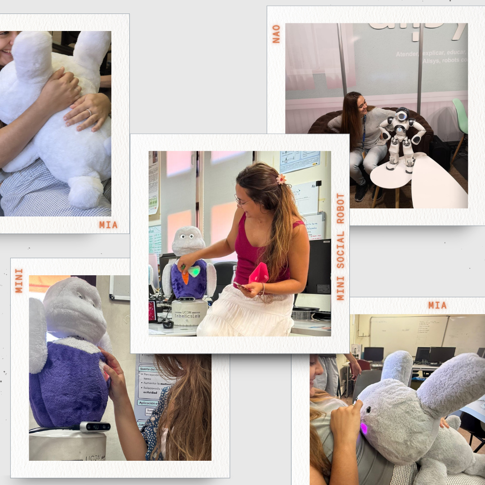

Aplico estrategias psicológicas en robots sociales para aumentar el bonding y el engagement. Creando tecnología que nos entiende y conecta con nosotros.
Soy investigadora predoctoral en la Universidad Carlos III de Madrid (UC3M). Mi trabajo se centra en el punto exacto donde la psicología humana se encuentra con la inteligencia artificial y la robótica.
No basta con que un robot funcione; necesitamos que conecte. A través del estudio del comportamiento humano, diseño estrategias para que los robots sociales generen confianza, empatía y vínculos a largo plazo (bonding) con las personas con las que interactúan.
Modelos cognitivos y conductuales aplicados a la interacción para entender el comportamiento humano.
Creación de vínculos emocionales sostenibles y mitigación del "novelty effect" a largo plazo.
Implementación real en plataformas robóticas para medir el engagement de forma cuantitativa.
Selección de mis publicaciones científicas destacadas.
Exploración de heurísticas cognitivas y estrategias psicológicas aplicadas a interfaces robóticas para fomentar interacciones más sostenibles.
Implementación real de una plataforma robótica en entornos de asistencia a mayores, evaluando el impacto cognitivo de actividades artísticas dirigidas por el robot.
Propuesta para aplicar la teoría de juegos con el objetivo de desarrollar robots con alto grado de vinculación.
Un espacio de experimentación donde alojo aplicaciones web y demos interactivas para poner a prueba estrategias de engagement en tiempo real.
Una mascota virtual experimental diseñada para probar estrategias de retención, cuidado y creación de hábitos (engagement) en usuarios mediante refuerzo psicológico.
Introduce las frases de tu robot social y una IA experta en psicología evaluará su nivel de bonding y engagement en tiempo real.
Espacio reservado para futuros experimentos interactivos.
UC3M | Lab de Robótica Social
Desarrollo de mi tesis y proyectos orientados a la generación de comportamientos en robots sociales. Trabajo activo en publicaciones de alto impacto y colaboración en el desarrollo cognitivo del Robot Social Mini.
Universidad Carlos III de Madrid (UC3M)
Especialización en investigación aplicada a la robótica y la inteligencia artificial. Foco en la interacción humano-máquina y la generación del lenguaje natural adaptativo.
Universidad Carlos III de Madrid (UC3M)
Proyecto fin de grado: "Aplicación accesible de comunicación para robot social Mini"
Inicio de mi inmersión en la robótica social desarrollando interfaces y sistemas que sentaron las bases de mi interés por la vinculación emocional humano-robot.

Creo firmemente que el futuro de la tecnología no reside solo en su capacidad de procesamiento, sino en su capacidad de conectar con las personas. Mi pasión por la psicología y la robótica nace del deseo de diseñar máquinas que entiendan la naturaleza humana.
El objetivo de mi investigación es crear robots sociales que acompañen, asistan y aporten un bienestar real a la sociedad, especialmente a quienes más lo necesitan en entornos terapéuticos y educativos.
Cuando no estoy en el laboratorio de la UC3M analizando métricas de interacción o programando a Mini, disfruto de mi tiempo libre buscando inspiración en nuevas lecturas, la naturaleza y el diseño centrado en el ser humano.